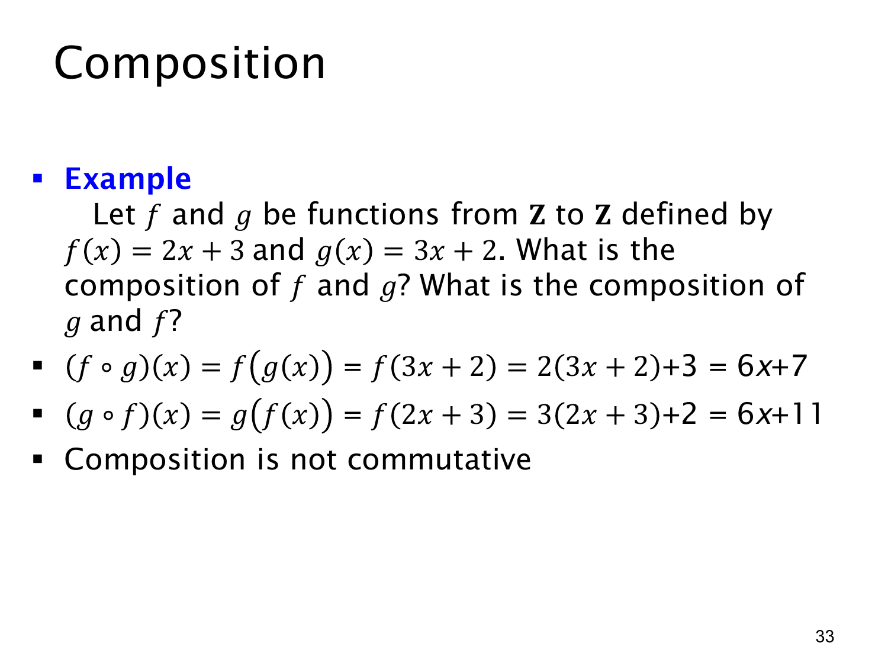

L1.4 · 第 33 页讲解原文
查看这一页课件

复合次序会改变结果
本页给出两个从 Z 到 Z 的函数：f(x)=2x+3，g(x)=3x+2。因为两者的定义域和陪域都为整数集，f∘g 与 g∘f 都有定义。
先 g 后 f：
(f∘g)(x)=f(g(x))=f(3x+2)=2(3x+2)+3=6x+7.
先 f 后 g：
(g∘f)(x)=g(f(x))=g(2x+3)=3(2x+3)+2=6x+11.
两式对每个整数 x 分别相差 4，所以是不同的函数。这给出明确反例，说明函数复合一般不满足交换律：f∘g=g∘f。例如代入 x=0，前者为 7，后者为 11。
原页第二条推导中，g(f(x)) 后面误写成 f(2x+3)，但紧接着代入的是 g(t)=3t+2 的规则，最终 6x+11 也正确。严格的中间式应为 g(2x+3)。本页讲解使用正确的中间式，并将原课件笔误另列勘误，保留原图与讲解原文的记录。
查看本页勘误
L1.4 第 33 页：g∘f 推导中的函数名
课件第二条写 (g∘f)(x)=g(f(x))=f(2x+3)=3(2x+3)+2=6x+11。其中 f(2x+3) 是笔误：按 f(t)=2t+3，它不会等于紧随其后的 3(2x+3)+2。
正确中间式为 (g∘f)(x)=g(f(x))=g(2x+3)=3(2x+3)+2=6x+11。课件的最终结果和“复合一般不交换”的结论保持正确。原课件图与逐页讲解原文保持不变，本勘误只标明中间符号错误。